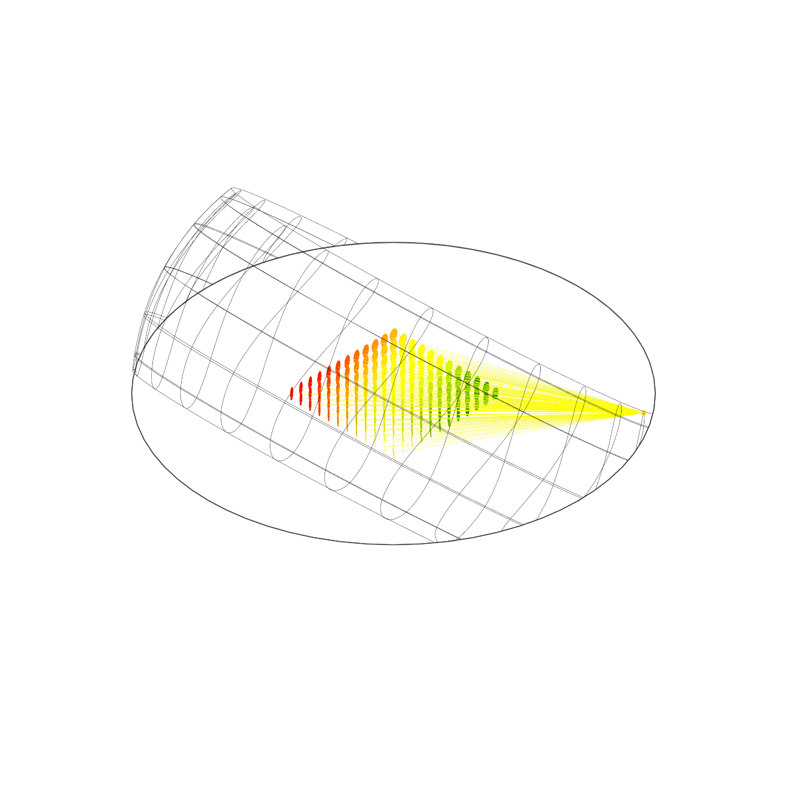
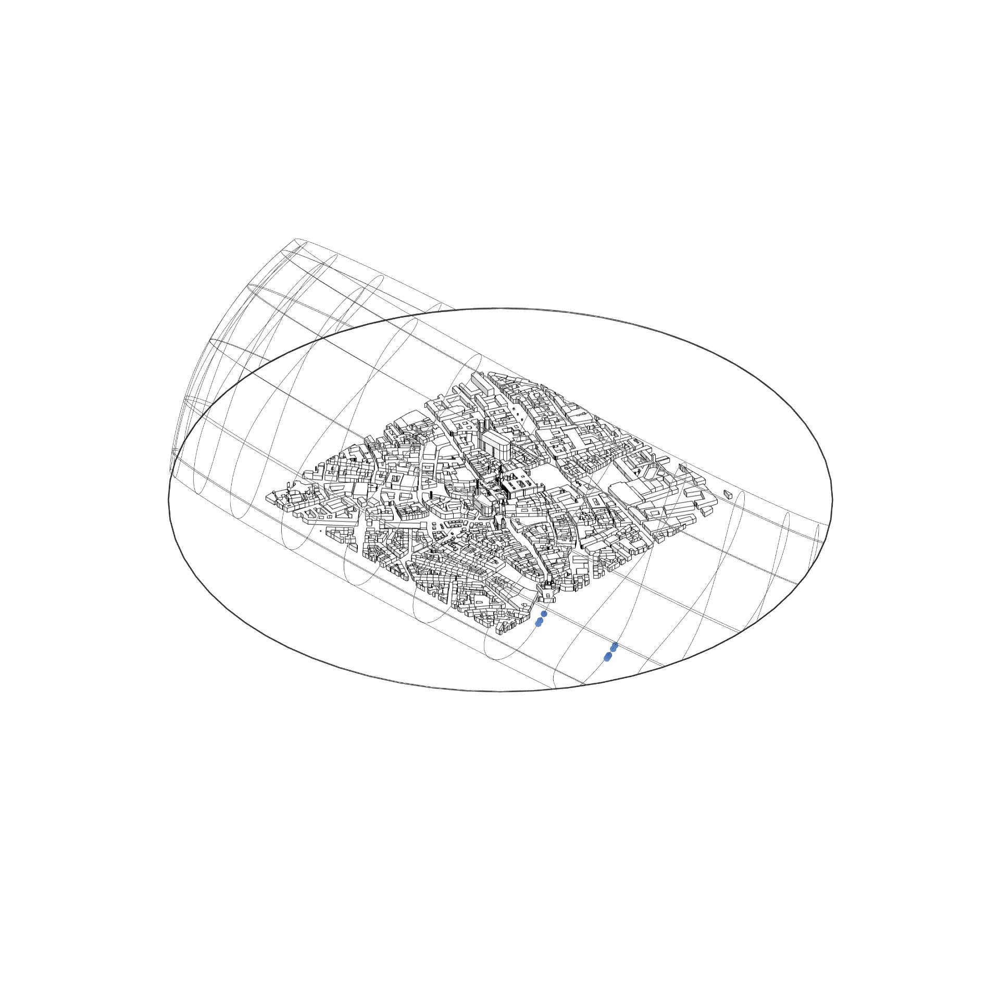
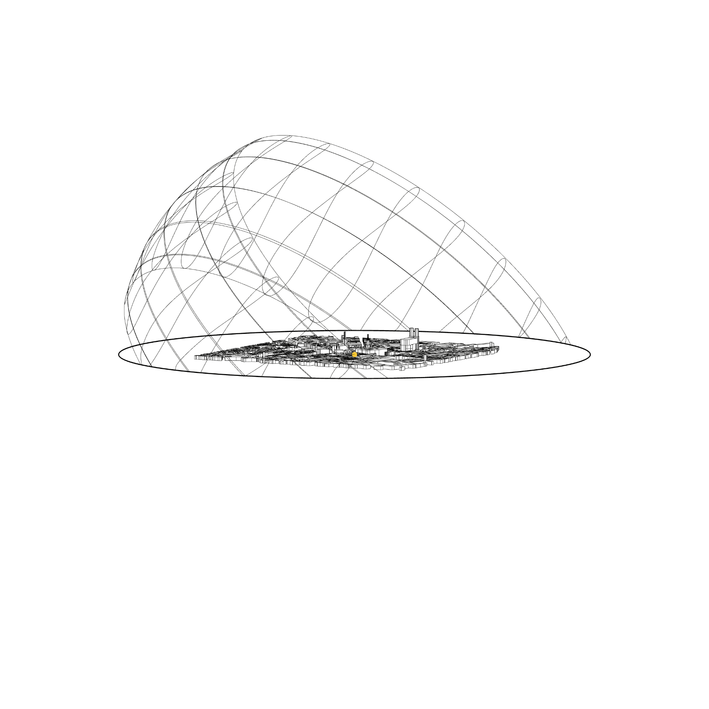

Sonnenverlauf + Sonnenansicht
Ladybug
⬤ Ladybug Sun-Path-Diagramme machen die Sonnenbahn über das Jahr stündlich erfahrbar – stereografisch projiziert mit Azimut und Elevation. Echtzeit-Animationen zeigen Auf-/Untergang und Höchststände präzise, kombiniert mit 3D-Modellen für exakte Beschattungsmuster und Insolationszeiten. Ideal für optimale Fassadenorientierung, Fensterplatzierung und Lamellenstrategien – direkte Basis für passiven Sonnenschutz, Solarenergie und perfektes Tageslicht.
⬤ Ladybug Sun-Path diagrams show the sun's path throughout the year on an hourly basis – projected stereographically with azimuth and elevation. Real-time animations show sunrise/sunset and peak values precisely, combined with 3D models for exact shading patterns and insolation times. Ideal for optimal facade orientation, window placement, and louver strategies – a direct basis for passive sun protection, solar energy, and perfect daylight.